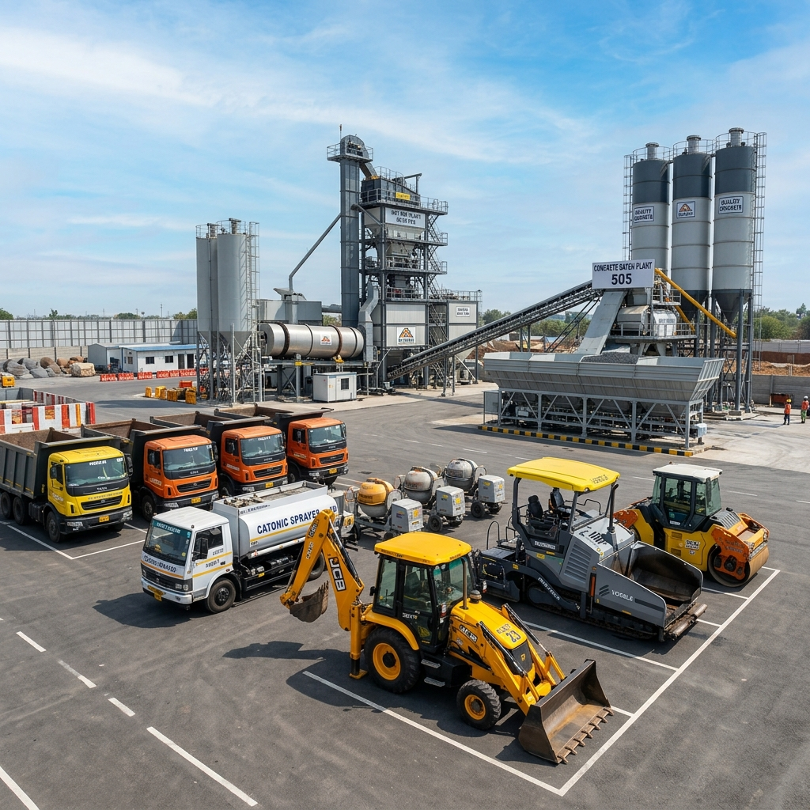

Hot mix plant capability
The 60/90 THP hot mix plant with 600 MT/day output supports strong execution positioning for road-related work.
Equipment depth makes the company feel execution-ready, not presentation-only.
Select your project type and scale, and our AI simulator will instantly calculate the ideal heavy machinery deployment needed from our fleet to meet execution deadlines efficiently.
Analyzing project requirements...

The 60/90 THP hot mix plant with 600 MT/day output supports strong execution positioning for road-related work.
Tipper trucks, portable mixers and loader-based equipment keep material flow and smaller site operations flexible.
Sensor paver, tandem roller and sprayer assets support surface quality and better roadwork presentation.